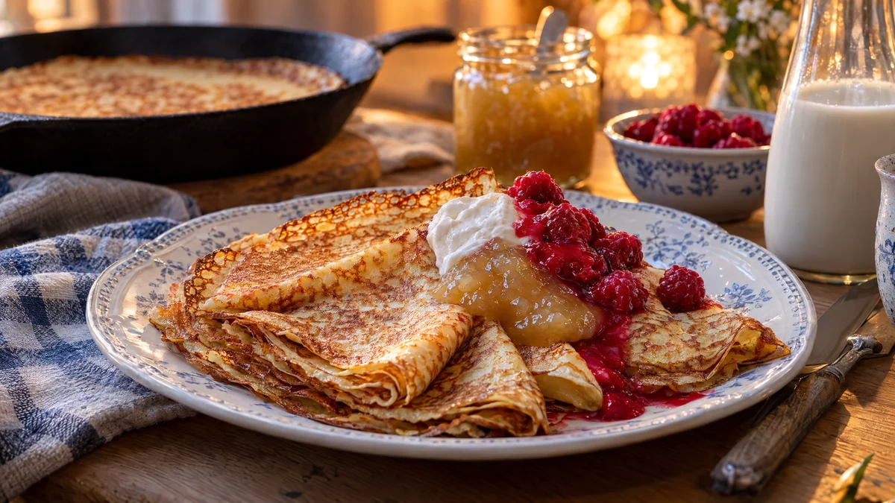

RESTFEST · RECEPTFrukost & brunch
Tunna pannkakor på havredryck utan ägg
Mjöl, havredryck och en nypa salt. Smeten får vila en halvtimme och steks sedan till tunna, gyllene pannkakor med spetsiga, krispiga kanter, som rullas eller viks i trianglar. Med sylt, bär och vispad havregrädde blir torsdagens ärtsoppa och pannkaka något alla kan äta.
- Förberedelse
- 5 min + 30 min vila
- Tillagning
- 25 min
- Portioner
- ca 12 pannkakor
- Nivå
- Nybörjare
Bra att veta. Läs alltid innehållsförteckningen. Mjölk och ägg kan gömma sig i margarin, choklad, ströbröd, buljong, korv och bröd. Laktosfritt är inte mjölkfritt, laktosfria produkter innehåller fortfarande mjölkprotein.
 Det här behöver du
Det här behöver du
Tryck på + vid det du behöver köpa.
Smet
Till servering
Gör så här
- Vispa ihop mjöl, socker, salt och hälften av havredrycken till en slät, tjock smet. Vispa i resten av havredrycken och det smälta margarinet.
- Låt smeten vila i 30 minuter. Då sväller mjölet och pannkakorna håller ihop bättre utan ägg.
- Hetta upp en stekpanna på medelhög värme och smält en liten klick margarin.
- Vispa om smeten och häll i ca ¾ dl. Vrid pannan så att smeten täcker botten tunt.
- Stek i 1½–2 minuter, tills kanterna har släppt och undersidan är gyllene. Pannkakor utan ägg behöver lite längre tid innan de går att vända. Vänd och stek 1 minut till.
- Lägg pannkakorna på ett fat under ett lock eller en handduk medan du steker resten.
Dekoration och servering
- Vik pannkakorna i trianglar och lägg dem lätt överlappande på ett fat, eller rulla dem runt en sked sylt.
- Toppa med en klick vispad havregrädde och tinade bär.
- Spritsa sylten i en tunn sicksack över pannkakorna för ett festligare intryck.
- Smeten håller ett dygn i kylen. Vispa om den före stekningen.
Mått och ugnstemperaturer
Måtten är svenska (dl, msk, tsk, krm). Ugnstemperaturerna gäller vanlig ugn med över- och undervärme; med varmluft, sänk med 20 grader.